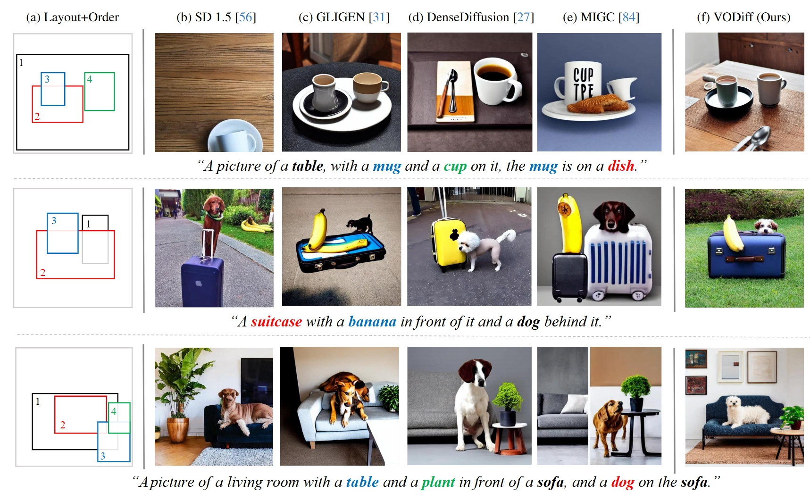

VODiff: Controlling Object Visibility Order in Text-to-Image Generation

Recent advancements in diffusion models have significantly enhanced the performance of text-to-image models in image synthesis. To enable control over the spatial locations of generated objects, diffusion-based methods typically utilize object layout as an auxiliary input. However, such methods treat all objects as being on the same layer, neglecting their visibility order, which leads to incorrect occlusions. To address this, we introduce a new training-free framework—VODiff—which considers object visibility order explicitly and allows users to place overlapping objects in a stack of layers. Our framework consists of a Sequential Denoising Process (SDP) and a novel Visibility-Order-Aware (VOA) Loss. Together, these designs enable VODiff to generate photorealistic images that satisfy user-specified spatial constraints and object occlusion relationships. We also introduce VOBench, a new benchmark dataset, and demonstrate the superiority of our approach through extensive experiments.
Our framework introduces two visibility-based designs:

Sequential Denoising Process (SDP): Assigns each object to a layer and generates objects one-by-one from bottom to top, maintaining spatial and occlusion relationships.
Visibility-Order-Aware Loss (VOA): Divides object masks into overlapping, visible, and background regions and applies region-specific attention constraints to guide denoising.


@inproceedings{liang2025vodiff,
title={VODiff: Controlling Object Visibility Order in Text-to-Image Generation},
author={Liang, Dong and Jia, Jinyuan and Liu, Yuhao and Ke, Zhanghan and Fu, Hongbo and Lau, Rynson WH},
booktitle={Proceedings of the Computer Vision and Pattern Recognition Conference},
pages={18379--18389},
year={2025}
}